Problem statement
My parents need a four-bedroom home on a narrow 12.4 × 21 m stand, built on a tight budget, and they should be able to live without climbing stairs every day.
Scope
What I was asked to deliver
Full concept design and structural design: plans, elevations, sections, roof plan, slab, beams, column, footings, staircase and roof trusses, plus a 3D model.
Solution
How I solved it
- Kept the front single storey under a lean-to roof and put the double storey at the back under a skillion roof. Both are IBR sheeting at 5° on timber mono-pitch trusses, which costs less than tiles on a hipped roof.
- Placed a bedroom suite on the ground floor so my parents can live on one level.
- Fitted a double garage and about 216 m² of floor area on the narrow stand.
- Designed the structure to SANS 10160 loads and SANS 10100 concrete: 190 mm slab, beams B1–B4, column C1 and footings at 100 kPa bearing.
- Designed a steel-stringer staircase with timber treads to SANS 10400-M.
3D model
Watch it go together
Build sequence
Drag to orbit · scroll or pinch to zoom · right-drag to pan
Drawings
Plans, elevations & sections
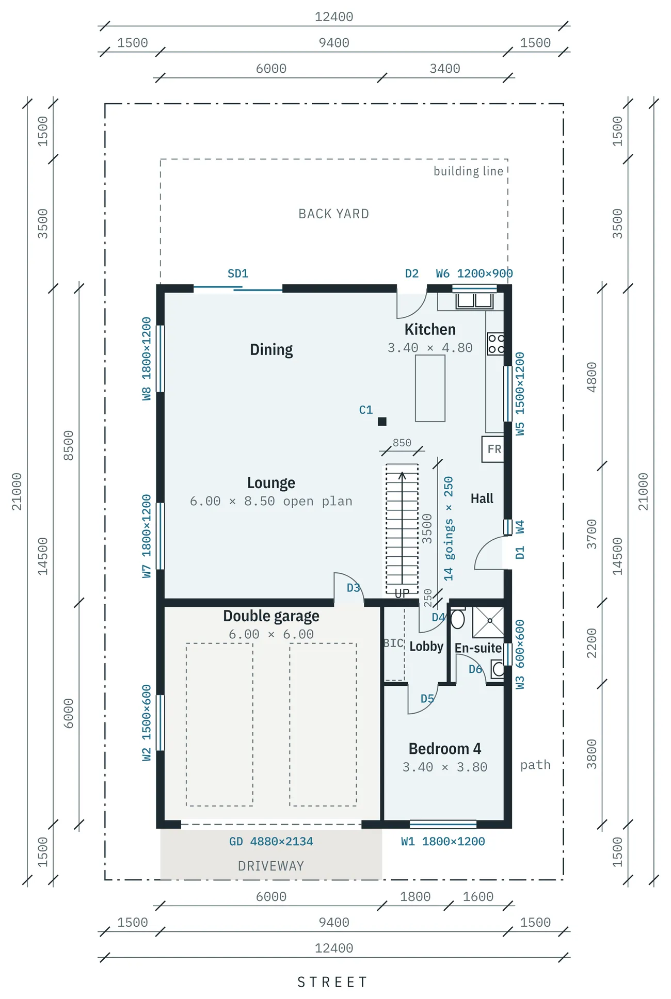
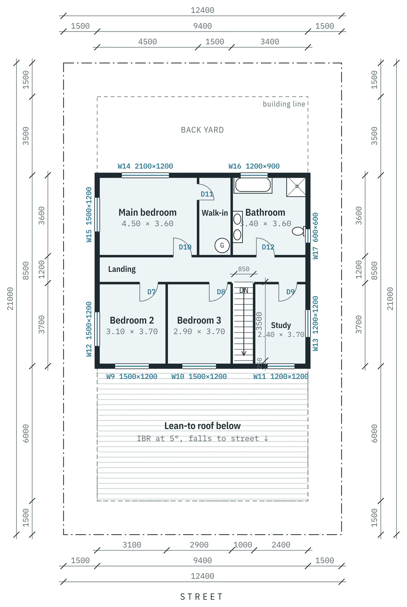
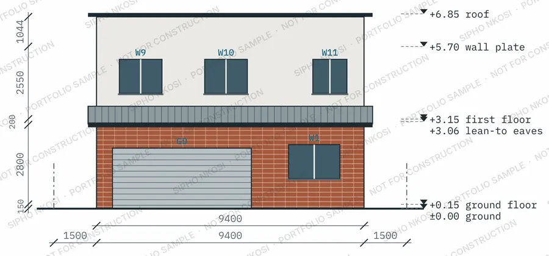
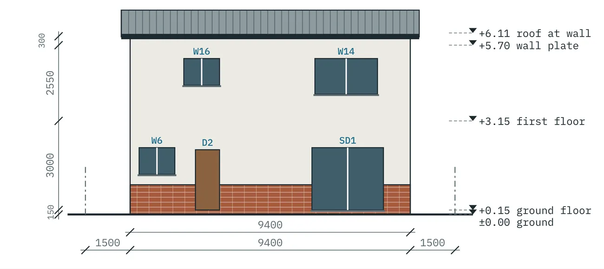
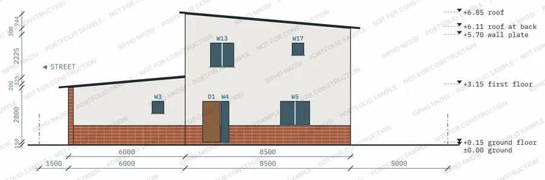
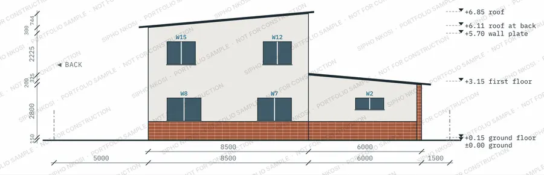
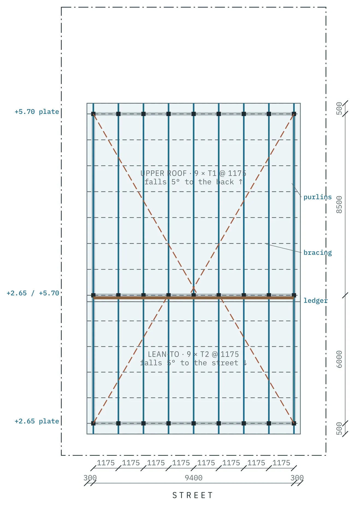
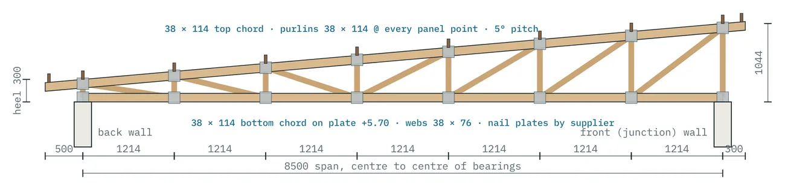
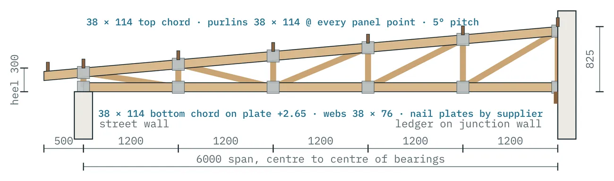
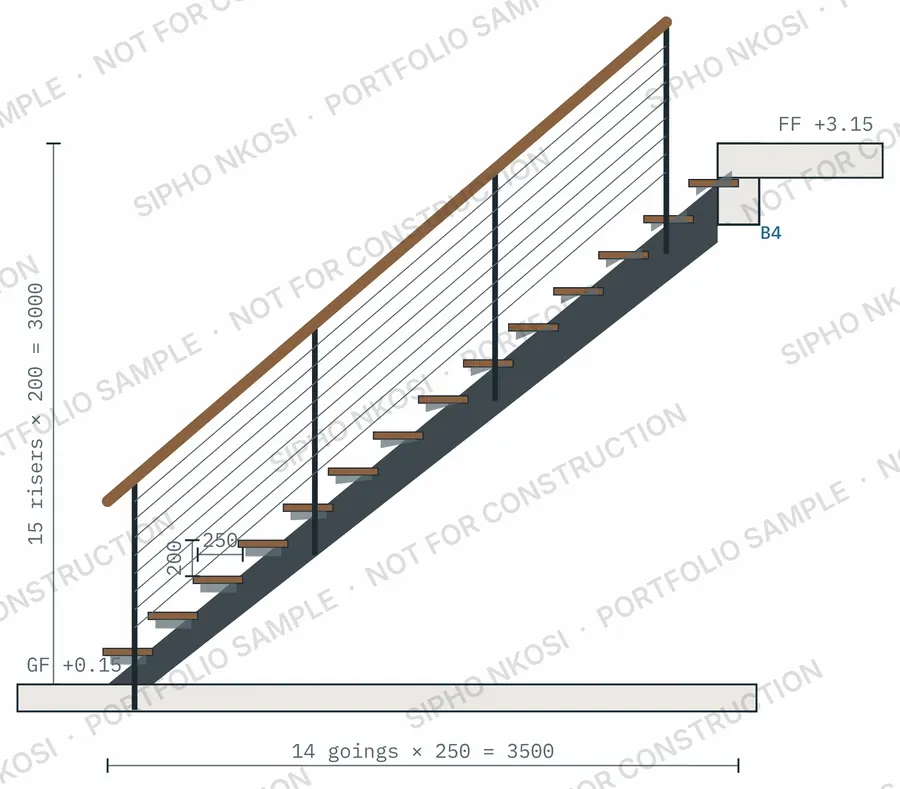
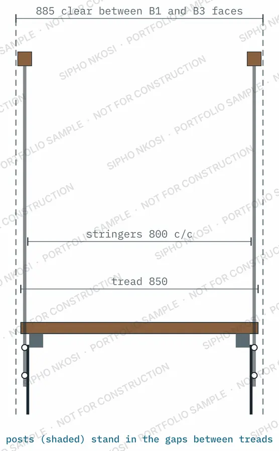